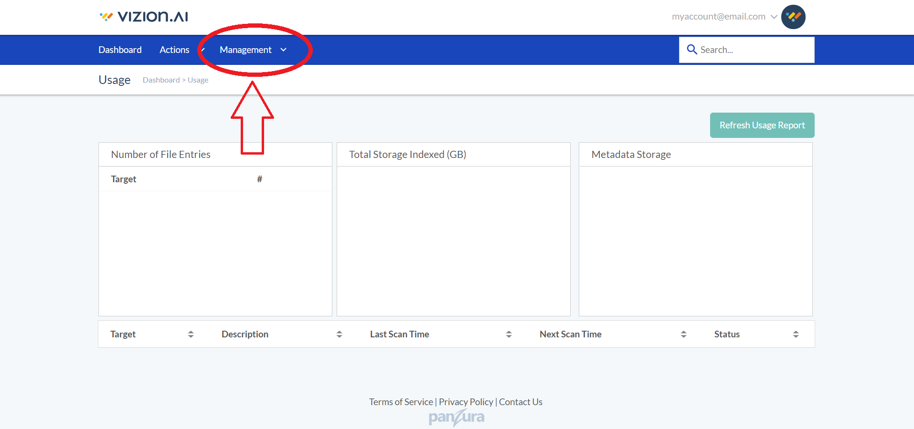

1) Create Vizion Account
2) Generate New App
From your account dashboard, navigate to Management > Configure > Elasticsearch Apps

3) App Credentials
Copy the credantials provided.
4) Download and Install Filebeat
Filebeat is a tool that lives on your webserver and automatically sends log data to Elasticsearch, allowing you to work with and (with Kibana) visuaize your data.
5) Filebeat Configuration File
Filebeat is configured using a YAML file. To quickly connect to your vizion.ai app, open the file called 'filebeat.yml' on your webserver, which was created upon installation.
Enter your vizion.ai elasticsearch url below and click the button to copy the contents of a new 'filebeat.yml'. Replace the text in your webserver .yml file with this.